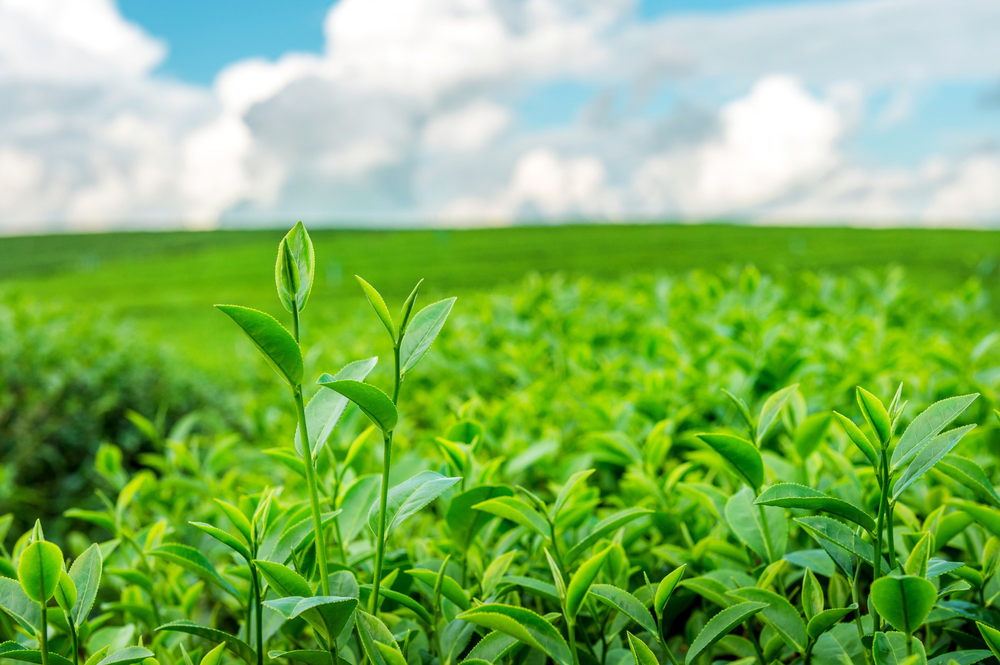

Agro Produce of the
Ahoada West Local Government Area
Why Choose Us?
Choose us for unparalleled expertise and personalized service,
ensuring your needs are met with precision and dedication.
Our commitment to excellence sets us apart, making your experience with us exceptional.
Excellent Service I'm glad you appreciate the service! Your satisfaction is our priority, and we're always here to assist you.
Clean Working Our commitment to clean and efficient work ensures your needs are met seamlessly.
Quality and Reliability Quality refers to the degree of excellence or superiority of a product, service, or process, reflecting its conformance to established standards and customer expectations.
Expert Farmer An expert farmer is a seasoned agricultural practitioner with in-depth knowledge and
advanced skills in crop cultivation, livestock management, and sustainable farming practices.
About
AGRICULTURE MARKET

The agriculture market is a dynamic ecosystem encompassing the production, distribution, and sale of crops and livestock.
It plays a pivotal role in global economies, addressing food security and livelihoods.
Evolving technologies and sustainable practices continue to shape the future of the agriculture market, promoting efficiency and environmental responsibility.